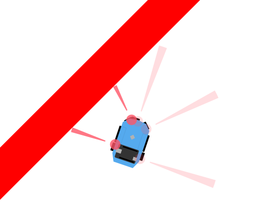
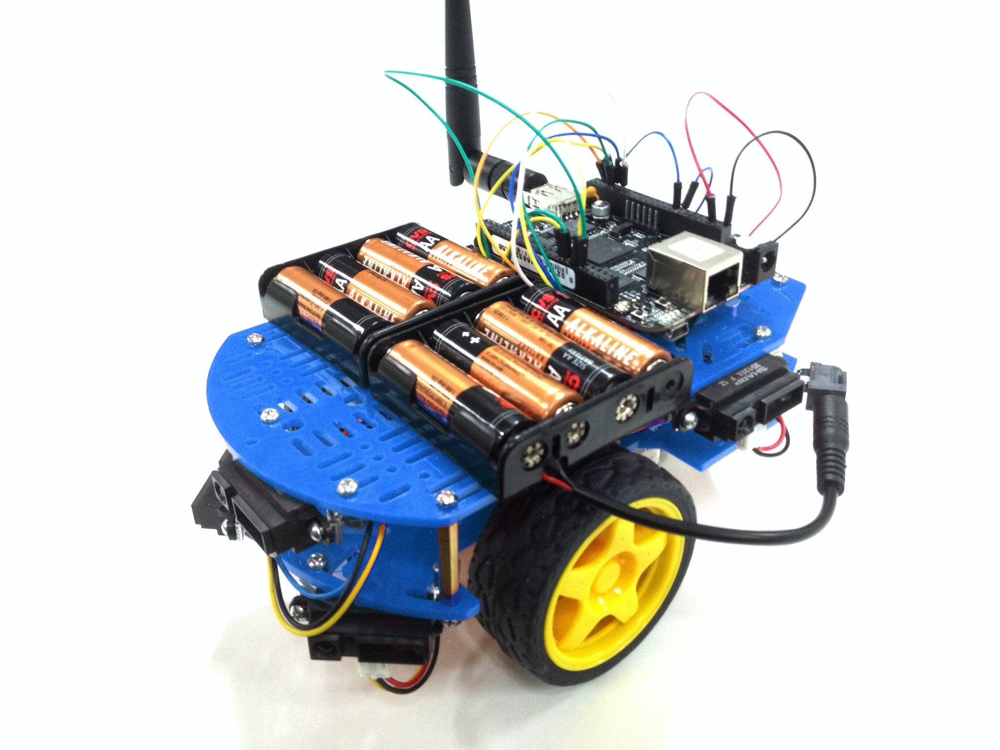
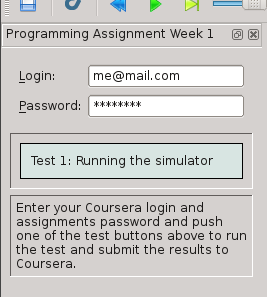

Using PySimiam in Coursera ‘Control of mobile robots’ course¶
Welcome, Coursera students!
Last year, during the first installment of the “Control of Mobile Robots” class, we have decided to build our own version of the robot simulator that doesn’t need MATLAB. This year we have the exciting opportunity to make our simulator available to all of the students of the course, thanks to Dr. Magnus Egerstedt and the team.
Our simulator is inspired by the original Sim.I.Am simulator, and the programming assignments, as well as the robot description were taken directly from the Sim.I.Am manual by Jean-Pierre de la Croix. Special thanks to him for his hard work.
Introduction¶
This manual is going to be your resource for using the simulator in the programming exercises for this course.
Installation¶
The lastest release of pySimiam for Coursera students is available from Sourceforge under the name pysimiam-coursera-weekX.zip (where X is the corresponding week for the exercise).
Unzip the latest provided archive and you are good to go! Run the simulator with:
>>> python qtsimiam_weekX.py
Requirements¶
You will need a reasonably modern computer to run the robot simulator. While the simulator will run on hardware older than a Pentium 4, it will probably be a very slow experience. You will also need Python 2.7 and two libraries - Numpy for mathematics and PyQT for the GUI.
Bug Reporting¶
If you run into a bug (issue) with the simulator, please provide a detailed description either in a message in the discussion forums, in an issue in the sourceforge issue tracker or in an email to the developers. The bug will get fixed and a new version of the simulator will be available at sourceforge.
Mobile Robot¶
The mobile robot you will be using in the programming exercises is the QuickBot. The QuickBot is equipped with 5 infrared (IR) range sensors. The QuickBot has a two-wheel differential drive system (two wheels, two motors) with a wheel encoder for each wheel. It is powered by two 4x AA battery packs on top and can be controlled via software on its embedded Linux computer, the BeagleBone Black. You can build the QuickBot yourself by following the hardware lectures in this course.
|  |  |
| The simulated QuickBot | The actual QuickBot |
{kind=link}
{kind=link}
The robot simulator recreates the QuickBot as faithfully as possible. For example, the range, output, and field of view of the simulated IR range sensors match the specifications in the datasheet for the actual Sharp GP2D120XJ00F infrared proximity sensors on the QuickBot.
IR Range Sensors¶
You will have access to the array of five IR sensors that encompass the QuickBot. The orientation of IR sensors (relative to the body of the QuickBot, as shown in previous figure, is 90°, 45°, 0°, -45° and -90° degrees, respectively. IR range sensors are effective in the range 4 cm to 30 cm only. However, the IR sensors return raw values in the range of [0.4, 2.75]V instead of the measured distances. To complicate matters slightly, the BeagleBone Black digitizes the analog output voltage using a voltage divider and a 12-bit, 1.8V analog-to-digital converter (ADC). The following is a look-up table to demonstrate the relationship between the ADC output, the analog voltage from the IR proximity sensor, and the approximate distance that corresponds to this voltage.
| Distance (m) | Voltage (V) | ADC out |
|---|---|---|
| 0.04 | 2.750 | 1375 |
| 0.05 | 2.350 | 1175 |
| 0.06 | 2.050 | 1025 |
| 0.07 | 1.750 | 875 |
| 0.08 | 1.550 | 775 |
| 0.09 | 1.400 | 700 |
| 0.10 | 1.275 | 637 |
| 0.12 | 1.075 | 537 |
| 0.14 | 0.925 | 462 |
| 0.16 | 0.805 | 402 |
| 0.18 | 0.725 | 362 |
| 0.20 | 0.650 | 325 |
| 0.25 | 0.500 | 250 |
| 0.30 | 0.400 | 200 |
Your supervisor can access the IR array through the robot_info object that is passed into the execute function. For example:
for i, reading in enumerate(robot_info.ir_sensors.readings):
print 'IR {} has a value of {}'.format(i, reading)
To use the sensor readings, you will have to convert them to actual distances. For that you need to convert from the ADC output to an analog output voltage, and then from the analog output voltage to a distance in meters. The conversion from ADC output to analog output voltage is simply,
Converting from the the analog output voltage to a distance is a little bit more complicated, because a) the relationships between analog output voltage and distance is not linear, and b) the look-up table provides a coarse sample of points. You can use any way you like to convert between sensor readings and distances. For example, you can use the SciPy mathematical library and interpolate the curve using scipy.interpolate.inter1d. Or you can fit the provided points with a high-degree polynomial and use this fit.
It is important to note that the IR proximity sensor on the actual QuickBot will be influenced by ambient lighting and other sources of interference. For example, under different ambient lighting conditions, the same analog output voltage may correspond to different distances of an object from the IR proximity sensor. The effect of ambient lighting (and other sources of noise) are not modelled in the simulator, but will be apparent on the actual hardware.
For the those curious to explain why IR sensors behave in an exponentially decaying manner: the intensity of the light decays in accordance to the inverse square law.
Note
In general, there is no need to know the exact indexing and number of the sensors, as all the information about the sensors is made available to the controllers and supervisors at runtime. In the best case, your code should be working even if the robot has 9 instead of 5 sensors.
Differential Wheel Drive¶
Since the QuickBot has a differential wheel drive (i.e., is not a unicyle), it has to be controlled by specifying the angular velocities of the right and left wheel (vl, vr), instead of the linear and angular velocities of a unicycle (v, ω). These velocities are computed by a transformation from (v, ω) to (vl, vr). Recall that the dynamics of the unicycle are defined as,
The dynamics of the differential drive are defined as,
where R is the radius of the wheels and L is the distance between the wheels.
The speed for the QuickBot can be obtained in the following way assuming that you have implemented the uni2diff function, which transforms (v, ω) to (vl, vr):
v = 0.15 # m/s
w = pi/4 # rad/s
# Transform from v,w to v_r,v_l
vel_r, vel_l = self.uni2diff(v,w);
The angular wheel velocity for the QuickBot is limited to about 80 RPM. It is important to note that if the QuickBot is controlled ot move at maximum linear velocity, it is not possible to achieve any angular velocity, because the angular velocity of the wheel will have been maximized. Therefore, there exists a tradeoff between the linear and angular velocity of the QuickBot: the faster the robot should turn, the slower it has to move forward.
Wheel Encoders¶
Each of the wheels is outfitted with a wheel encoder that increments or decrements a tick counter depending on whether the wheel is moving forward or backwards, respectively. Wheel encoders may be used to infer the relative pose of the robot. This inference is called odometry. The relevant information needed for odometry is the radius of the wheel, the distance between the wheels, and the number of ticks per revolution of the wheel. For example:
R = robot_info.wheels.radius # radius of the wheel
L = robot_info.wheels.base_length # distance between the wheels
tpr = robot_info.wheels.ticks_per_rev # ticks per revolution for the wheels
print 'The right wheel has a tick count of {}'.format(robot_info.wheels.right_ticks)
print 'The left wheel has a tick count of {}'.format(robot_info.wheels.left_ticks)
Week 1. Getting to know pySimiam¶
This week’s exercises will help you learn about Python and the robot simulator:
- Since the programming exercises involve programming in Python, you should familiarize yourself with this language. Point your browser to
http://docs.python.org/2/tutorial/to get an introduction to basic concepts. - Familiarize yourself with the simulator by reading the section on Running pySimiam, this manual and running the simulator script
qtsimiam_week1.py.
- Try different view modes, like focusing on the robot and zooming
- Change the parameters of the supervisor. For example, change the position of the goal and watch the robot direct itself towards it (to see the position of the goal you have to turn on supervisor info drawing). Also try changing the PID gains.
- Crash you robot against a wall! The collision detection was not implemented in the supervisor, so the robot does not react to any obstacles and collides with them.
- You are welcome to read the API documentation of the simulator parts and look at the simulator’s code. The full understanding of the inner working is, however, not required to complete any of the assignments.
Grading¶
{kind=link}
This week you only need to be able to run the simulator to get full grades. To submit your results for grading, enter your login and password from the Assignments page (these are not your Coursera login and password - those will not work) into the corresponding fields of the grading window (see screenshot), and press the “Test 1: Running the simulator button”. The tester will load the week1 world and wait for the robot to reach the goal (or collide with something). Any submission errors will be displayed in the corresponding field.
If you have closed the submission window, you can call it back by pressing the ‘coursera’ button in the menu or on the toolbar.